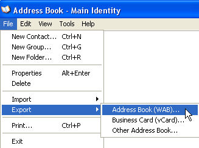
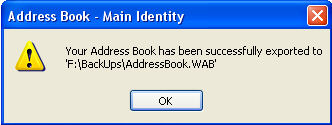
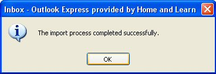

Free
computer Tutorials
|
Free
computer Tutorials
|
|
 home home |
Stay at Home and Learn | ||||
How to Backup an Outlook Express AddressBook
If something happens to your PC, the loss of your Outlook Express Address Book can be devastating. Imagine all those valuable contacts disappearing when you computer refuses to ever boot up again! In this tutorial, we'll see how to backup your Address Book. That way, you can restore it at the click of a few mouse buttons. Off we go.
Backup an Outlook Express AddressBook
 Choose a location and file name for your Address book, then click the Save button. Outlook Express will save your address book.  Note the location in the Message Box. This address book is being backed up to a folder on the F drive called Backups. The name of the file is AddressBook.wab. You now need to learn how to import this file, just in case anything goes wrong with your PC.
How to Import an Address Book in Outlook ExpressThe process to import an address book into Outlook Express is quite straightforward. Do this:
 All your contacts will then be restored to Outlook Express.
Another useful backup is Email Accounts. Rather than typing out all your account details again, why not just import it from your backup folder? You'll learn how to do that in the next lesson. Learn How to Backup an Outlook
Express Email Account --> |
|||||
|